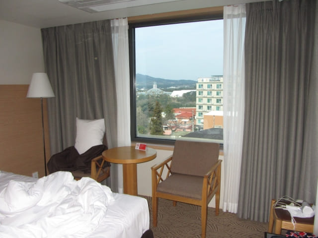
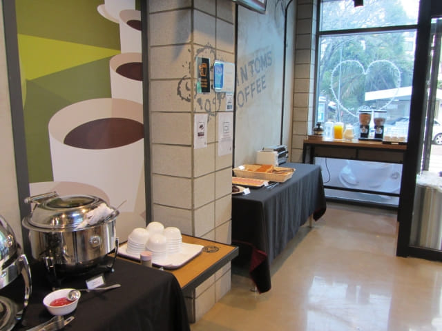

3.24.2017 (星期五)
昨晚睡前看看韓國氣象廳 (http://www.kma.go.kr)天氣預測, 未來幾天和中期預測都是密雲有雨, 早晚天氣十分寒冷, 平均只有約攝氏五度, 頓時暈得一陣陣, 看來濟州島部份行程極有可能要取消和更改了!
早上六時半起床, 拉開窗簾一看, 窗外天色一片昏暗, 幸好暫時沒有下雨。馬上取出出發前準備的旅遊資料, 粗略重新安排行程後, 決定今天遠足往山房山、龍頭海岸及松岳山。
我們的計劃是這樣的: 首先從酒店乘巴士往順東區村 (화순동취락지구) , 然後沿偶來號小路步行往山房山、龍頭海岸、沙溪港, 最後抵達松岳山 (송악산)。
以下是我們原本的詳細遠足路線:
乘巴士往順東區村巴士站 → 偶來9號小路 →
和順里先史遺址 → 黃蓋川蓋章站 → 偶來9號小路 →
和順金沙海邊 (偶來10號小路起點) → 偶來10號小路 →
和順金沙海邊 → Sagendaki 山 → 黄宇峙沙灘 →
山房山 → 龍頭海岸 → HAMEL 船 → 油菜花田 →
沙溪港 (사계항) → 松岳山 (송악산)可惜因行程並不順利, 最終只步行到沙溪港。
本暱客雅酒店-中文的房間景觀開揚, 可看到中文旅區和中文海灣一帶優美景色。



梳洗完畢, 乘電梯往酒店一樓附設的 TOM N TOMS COFFEE 餐廳用自助早餐。本暱客雅酒店-中文提供的免費自助早餐十分豐富, 餐廳地方寬敞, 座位舒適, 為今天有一個好的開始。




乘702號巴士往安德農業
用完早餐, 返回房間, 收拾一些隨身攜帶的用品及旅遊資料, 於上午八時五十分開始今天的行程。走出酒店, 步行往中文郵局巴士站 (중문우체국), 準備搭乘 702號巴士往和順東區村。
往和順東區村方向的中文郵局巴士站 (중문우체국)就在酒店前的馬路斜對面, 十分方便, 步行一會便抵達。
約早上八時五十五分抵達巴士站, 正在拍照之際, 一輛巴士急速的駛來靠站, 馬上看看車頭的號碼, 原來是 702號 巴士, 連忙匆匆跳上車, 告知車長我們的下車站, 用 T-money 卡付了車資, 便隨便在車廂中間的座位坐下來。
坐了一會, 才發覺剛才上車時匆忙間竟然將「安德農業 (안덕농협)」巴士站的紙條遞給了車長看, 而不是和順東區村 (화순동취락지구) 巴士站, 心想也沒關係, 到站時按鈴下車便是了。
其實巴士車廂內會顯示到站和下一個站的巴士站名稱, 所以也不用害怕不懂下車的。
巴士行駛了約十五分鐘, 看見車廂內的屏幕顯示下個站便是 화순동취락지구 (和順東區村), 便按鈴下車。不一會, 巴士在和順東區村巴士站停下來, 正離座走前之際, 車長看見我們, 馬上揮手表示還未到安德農業 (안덕농협), 便立即關門開車。
因為上車時知會了車長我們往「安德農業」, 真想不到他是牢記在心的。我們當然不會責備司機, 反而稱讚他的熱心。
安德農業 (안덕농협)
幸好和順東區村下個站便是安德農業, 兩站相距並不遠, 並沒有影響我們的計劃。下了車, 時間是上午九時十二分, 行車時間約十六分鐘。
注意:
如果不打算遠足的朋友, 不要在這裡下車, 巴士會繼續駛往 山房山的, 約五個站便到達。